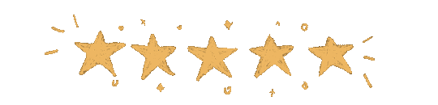

Beiyu Lin
Email: beiyu.lin@unlv.edu
Office: SEB-3251
Beiyu is an assistant professor in Computer Science at the University of Nevada - Las Vegas. Dr. Lin received her B.S. from Shanghai Maritime University in 2011, her M.S. from Stony Brook in 2013, and M.S. and Ph.D. from Washington State University in 2015 and 2020, respectively.
Her research includes machine learning, deep learning, human dynamics, behavior modeling, home/building security, biomedical applications of AI, and smart environments.
| Teaching | Publications | Lab | Service | Vitae |
|---|
I am actively recruiting 2 fully funded Ph.D. students. Please email me if you are interested.
News
2022| 9/27: | Our AAAI-23 AISI submission has advanced to Phase 2 review process. |
| only about 55% of papers advanced to Phase 2, out of over 300 submissions. | |
| 9/26: | Affiliate Faculty Member, Nevada Center for Astrophysics. |
| 8/29: | Welcome Wenkai, Cicelia, Louis, Alla, Vincent, Sumin, Tommy, and Theodore to be part of SAIL! |
| 8/18: | NSF MRI awarded (serve as Co-PI). |
| 6/29: | awardee of Faculty Opportunity Award in the Research Award category, UNLV. |
| 6/9: | awardee of Troesh Center Research Grants, Troesh Center for Entrepreneurship and Innovation, Lee Business School, UNLV. |
| 6/1: | selected to participate in the QEM NASA Proposal Development workshop with travel support. |
| 5/16: | welcome Theo, Charles, Alexandre, Louis as visiting students! Bonjour. |
| 4/26: | selected to submit DOE pre-applications. |
| 4/11: | recipient of UFTC Award. |
| 4/5: | serve as a Session Chair in SDM 2022. |
| 4/1: | serve as Program Committee member for PKDD 2022 |
| 1/31: | Letter of Intent to NASA Nevada is selected! |
| 1/4: | People Choice Award, 2022 IEEE Rising Stars Poster Competition. |
| 12/19: | Our paper has been accepted by SDM 2022 (acceptance rate is 27.8%). |
| 12/15: | average evaluation scores for one online course in Fall is 4.78 out of 5. |
| 11/23: | Our submission has been accepted for 2022 IEEE Rising Stars Poster Competition (preso link). |
| 10/29: | Our submission has been selected for AAAI-22 Student Abstract and Poster Program. |
| Congratulations, Guangyu! | |
| 9/28: | serve as a program committee for SDM'22. |
| 9/19: | Invited to speak at CIVILMEET2022. |
| 7/2: | Awardee of a vGHC Faculty Scholarship. |
| 6/7: | Serve in one NSF panel. |
| 5/26: | average evaluation scores for the two online courses in Spring are 4.83 and 4.49 out of 5. |
| 4/19: | SDM 2021 Best Applied Data Science Paper Award. |
| (SDM is one of the top 4 data mining conferences.) | |
| 4/12: | Awardee SIAM Early Career Travel Award for SDM2021 (funded by NSF) and Tutorial Free Registration. |
| 4/1: | Google exploreCSR workshop + summer research internships are open for applications. |
| 1/29: | Invited to talk at Dr. Upal Roy's lab in the Department of Health & Biomedical Sciences, UTRGV. |
| 1/26: | Congratulations to Sonny (intern in the lab) for next step in Simons Foundation as data analyst intern! |
| (back in 2011, Simons Foundation was one of my dream companies.) | |
{kind=link}
| 1/1: | the average evaluation scores for the two courses I taught online in Fall are 4.51 and 4.48 out of 5. |